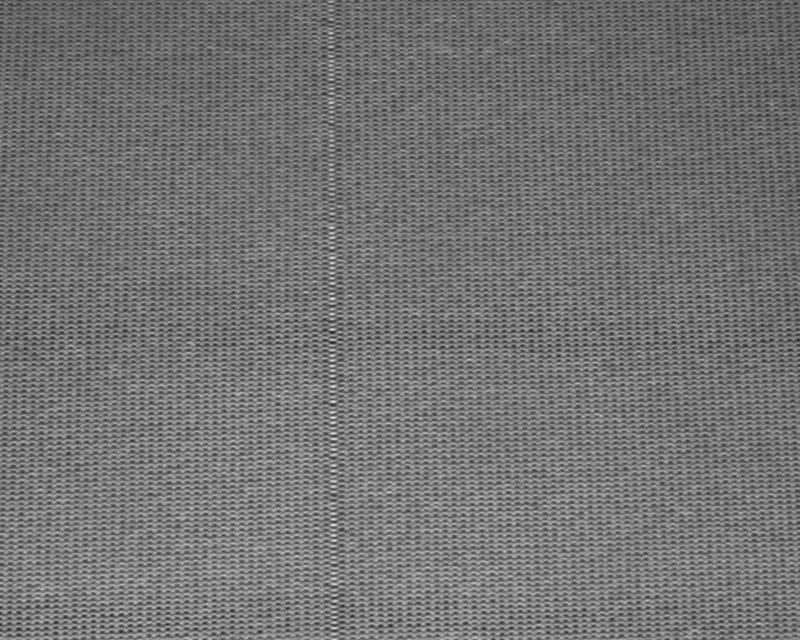
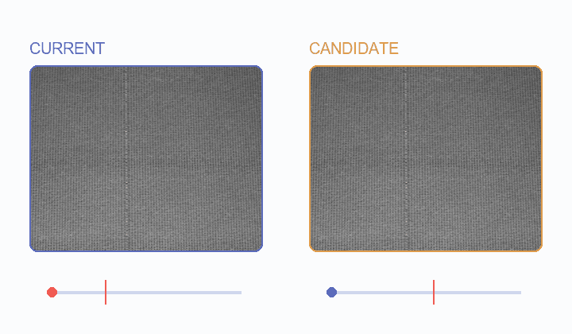
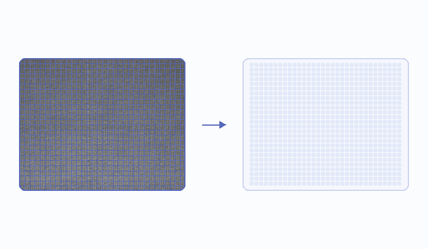
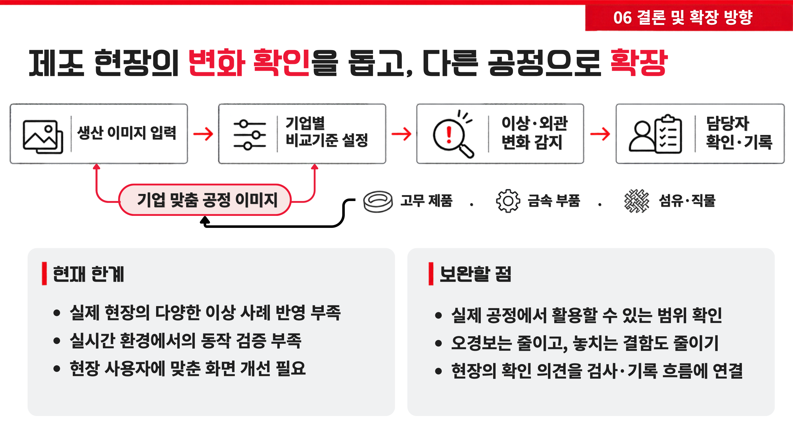
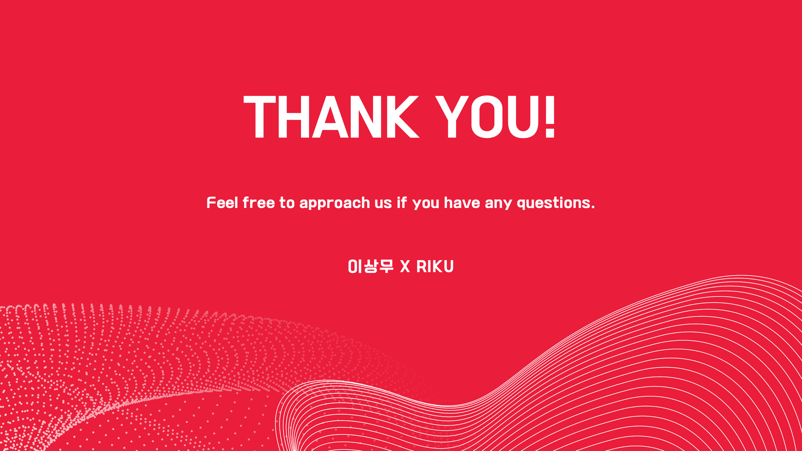

SURFACETRACE · RECORDED RESULTS
OVERVIEW
 →
→




ORIGINAL SURFACETRACE

DATA & REFERENCE


Frozen DINOv2 ViT-S/14 · 448×364 입력 → 832개 패치
라벨 없이 기준 선별 · 코사인 거리·PCA · 512장 → 308장 → 7,392개 기준 특징
INTERVAL CHANGE DETECTION
128장 묶음 · 32장 간격
MMD 경보선 3회 연속 초과
15/16 전환 감지 · 0건 확정 경보
동일 녹화 16,518장 · 감지 시점 중앙값 96프레임
ANOMALY DETECTION
점수 —
점수 —
REVIEW SELECTION
발견한 신규 결함 사건
15 → 26건 · 동일 검수량 기준
HUMAN REVIEW · 현장팀
REPORT HANDOFF
검수 결과를 전달하면 AI 솔루션팀이 기준 후보를 검증하고, 새로운 기준의 적용 여부를 검토합니다.
사진 확인 · 검수 기록
기준 후보 검증 · 적용 판단
AI SOLUTION TEAM · REFERENCE VALIDATION
기존 기준검수 기반 후보
QUALITY MANAGEMENT · HUMAN-IN-THE-LOOP

